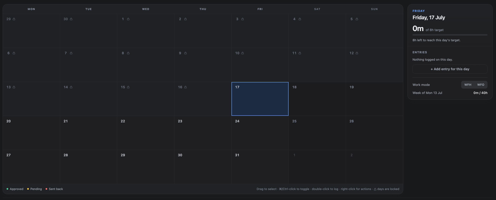

Once a period has been reported on or invoiced, letting people quietly change it undermines every number that came out of it. Locking freezes the past after a set number of days.
1. The lock window
Set Timesheet lock in Admin Settings to a number of days. Entries older than that become read-only. The default is 30 days; zero disables locking entirely.
The window is measured in each person's own timezone, derived from their settings — so a lock does not arrive a day early for someone in Auckland.
2. What locking prevents
- Creating an entry on a locked day.
- Editing or deleting an existing entry on a locked day.
- Moving an entry onto a locked day.
The Calendar greys out locked days, right-click actions are disabled on them, and the server refuses the same operations independently — the interface is a convenience, not the control.

3. Requesting an unlock
If a genuine correction is needed, request an unlock from the locked day itself. Say why — the reason is what the reviewer decides on.
- Open the locked day — and choose Request unlock.
- Give a reason and the dates — you need reopened.
- Wait for a decision — you are notified either way.
- Make the correction — the unlock window is time-limited.

4. Reviewing unlock requests
Requests go to site administrators, under Admin Settings → Unlock Requests. A granted unlock reopens the named dates for that person only, for a limited window — 48 hours unless the administrator sets a different figure when granting it.

5. Automatic re-locking
Granted unlocks expire on their own; a scheduled job marks them expired once the window has passed. Nobody has to remember to re-lock anything.
6. Billed time is a stronger lock
An entry that has been billed on an issued invoice cannot be edited even inside an unlock window, and the message says so. Requesting an unlock will not help, because the constraint is the invoice, not the calendar. The invoice has to be voided first — see Invoices.